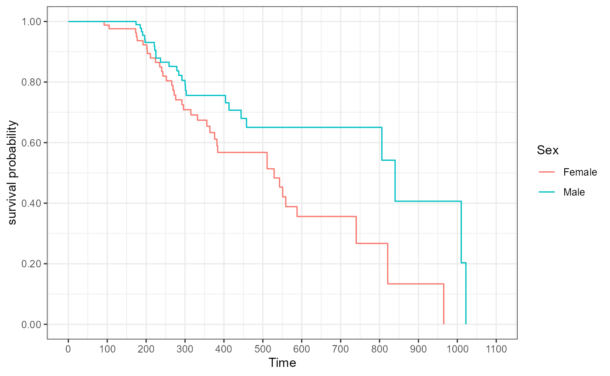
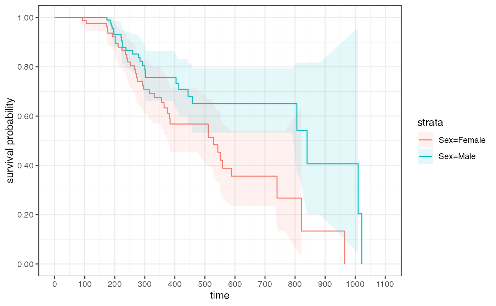
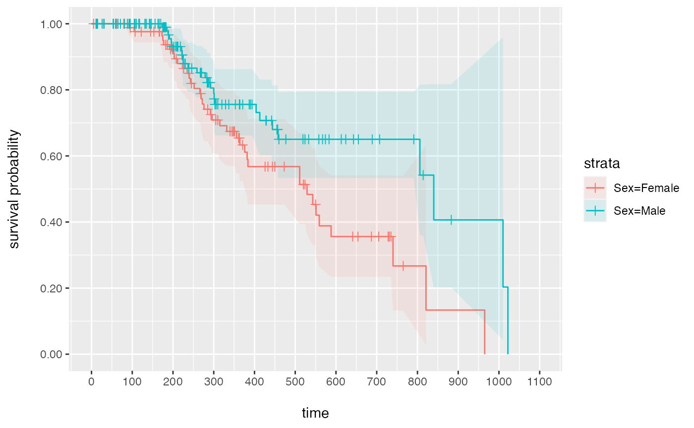
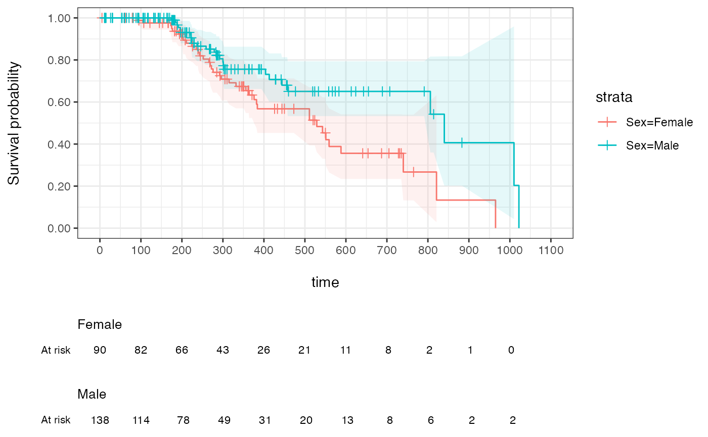

This tutorial illustrates a typical use case in clinical development - the analysis of time to a certain event (e.g., death) in different groups. Typically, data obtained in randomized clinical trials (RCT) can be used to estimate the overall survival of patients in one group (e.g., treated with drug X) vs another group (e.g., treated with drug Y) and thus determine if there is a treatment difference.
For a more thorough introduction to Survival Analysis, we recommend the following tutorial.
In this example, we will work with patient data from NCCTG Lung Cancer dataset that is part of the survival package. Another vignette presents an example using a data set following the CDISC ADaM standard.
# Constants
DATASET <- paste0("NCCTG Lung Cancer Dataset (from survival package ",
packageVersion("survival"), ")")
# Global formatting options
options(digits = 3)
# Global ggplot settings
# theme_set(theme_classic())
# Global table settings
options(DT.options = list(pageLength = 10,
language = list(search = 'Filter:'),
scrollX = TRUE))
lung_cohort <- survival::lung
# Change gender to be a factor and rename some variables to make output look nicer
lung_cohort <- lung_cohort %>%
dplyr::mutate(sex = as.factor(ifelse(sex == 1, "Male", "Female"))) %>%
dplyr::rename(Age = "age", Sex = "sex", Status = "status", Days = "time")Visualizing tables, like the tableone or risktables, is a two-step process in visR . First, a data.frame (or tibble) is created by a get_XXX() function (e.g. get_tableone()). Secondly, the data.frame can be displayed by calling the function render(). The advantage of this process is that data summaries can be created, used and adjusted throughout an analysis, while at every step data summaries can be displayed or even be downloaded.
Populations are usually displayed as a so-called tableone. Function get_tableone creates a tibble that includes populations summaries.
# Select variables of interest and change names to look nicer
lung_cohort_tab1 <- lung_cohort %>%
dplyr::select(Age, Sex)
# Create a tableone
tab1 <- get_tableone(lung_cohort_tab1)
# Render the tableone
render(tab1, title = "Overview over Lung Cancer patients", datasource = DATASET)| Overview over Lung Cancer patients | |
|---|---|
| Total (N=228) | |
| Age | |
| Mean (SD) | 62.4 (9.07) |
| Median (IQR) | 63 (56-69) |
| Min-max | 39-82 |
| Missing | 0 (0%) |
| Sex | |
| Female | 90 (39.5%) |
| Male | 138 (60.5%) |
| Data Source: NCCTG Lung Cancer Dataset (from survival package 3.2.10) | |
Function render nicely displays the tableone. Additionally, visR includes a wrapper function to create and display a tableone in only one function call.
# Use wrapper functionality to create and display a tableone
tableone(lung_cohort_tab1, title = "Overview over Lung Cancer patients", datasource = DATASET)| Overview over Lung Cancer patients | |
|---|---|
| Total (N=228) | |
| Age | |
| Mean (SD) | 62.4 (9.07) |
| Median (IQR) | 63 (56-69) |
| Min-max | 39-82 |
| Missing | 0 (0%) |
| Sex | |
| Female | 90 (39.5%) |
| Male | 138 (60.5%) |
| Data Source: NCCTG Lung Cancer Dataset (from survival package 3.2.10) | |
Creating and visualizing a tableone with default settings is very simple and can be done with one line of code. However, there are further customization options.
In both the getter and the wrapper functions, a stratifier can be defined and the column displaying total information can be removed.
# Create and render a tableone with a stratifier and without displaying the total
tableone(lung_cohort_tab1, strata = "Sex", overall = F,
title = "Overview over Lung Cancer patients", datasource = DATASET)| Overview over Lung Cancer patients | ||
|---|---|---|
| Female (N=90) | Male (N=138) | |
| Age | ||
| Mean (SD) | 61.1 (8.85) | 63.3 (9.14) |
| Median (IQR) | 61 (55-68) | 64 (57-70) |
| Min-max | 41-77 | 39-82 |
| Missing | 0 (0%) | 0 (0%) |
| Data Source: NCCTG Lung Cancer Dataset (from survival package 3.2.10) | ||
visR’s render supports three different rendering engines to be as flexible as possible. By default, render uses gt. Additional engines are datatable (dt) to include easy downloading options…
# Create and render a tableone with with dt as an engine
tableone(lung_cohort_tab1, strata = "Sex", overall = F,
title = "Overview over Lung Cancer patients", datasource = DATASET,
engine = "dt")…and kable for flexible displaying in various output formats (html by default, latex supported).
# Create and render a tableone with with kable as an engine and html as output format
tableone(lung_cohort_tab1, strata = "Sex", overall = F,
title = "Overview over Lung Cancer patients", datasource = DATASET,
engine = "kable", output_format="html")| variable | statistic | Female (N=90) | Male (N=138) |
|---|---|---|---|
| Age | Mean (SD) | 61.1 (8.85) | 63.3 (9.14) |
| Age | Median (IQR) | 61 (55-68) | 64 (57-70) |
| Age | Min-max | 41-77 | 39-82 |
| Age | Missing | 0 (0%) | 0 (0%) |
| Additional Note: | |||
| Data Source: | |||
| NCCTG Lung Cancer Dataset (from survival package 3.2.10) |
Called with html as an output format, a html view is displayed; called with latex a string containing latex code is printed.
visR provides a wrapper function to estimate a Kaplan-Meier curve and several functions to visualize the results. This wrapper function is compatible with %>% and purrr::map functions without losing traceability of the dataset name.
# Select variables of interest and change names to look nicer
lung_cohort_survival <- lung_cohort %>%
dplyr::select(Age, Sex, Status, Days)
# For the survival estimate, the censor must be 0 or 1
lung_cohort_survival$Status <- lung_cohort_survival$Status - 1
# Estimate the survival curve
lung_suvival_object <- lung_cohort_survival %>%
estimate_KM(strata = "Sex", CNSR = "Status", AVAL = "Days")
lung_suvival_object
#> Call: survival::survfit(formula = survival::Surv(Days, 1 - Status) ~
#> Sex, data = lung_cohort_survival)
#>
#> n events median 0.95LCL 0.95UCL
#> Sex=Female 90 37 529 376 NA
#> Sex=Male 138 26 840 806 NAThere are two frequently used ways to estimate time-to-event data: As a risk table and as a Kaplan-Meier curve. In principle, visR allows to either visualize a risk table and a Kaplan-Meier curve separately, or both together in one plot.
Creating and visualizing a risk table separately works in the exact same way as for the tableone (above): First, get_risktable() creates a tibble with risk information that can still be changed. Secondly, the risk table can be rendered to be displayed.
# Create a risktable
rt <- get_risktable(lung_suvival_object)
# Display the risktable
render(rt, title = "Overview over survival rates of Lung Cancer patients", datasource = DATASET)| Overview over survival rates of Lung Cancer patients | |||
|---|---|---|---|
| time | y_values | Female | Male |
| 0.00 | At risk | 90.00 | 138.00 |
| 100.00 | At risk | 82.00 | 114.00 |
| 200.00 | At risk | 66.00 | 78.00 |
| 300.00 | At risk | 43.00 | 49.00 |
| 400.00 | At risk | 26.00 | 31.00 |
| 500.00 | At risk | 21.00 | 20.00 |
| 600.00 | At risk | 11.00 | 13.00 |
| 700.00 | At risk | 8.00 | 8.00 |
| 800.00 | At risk | 2.00 | 6.00 |
| 900.00 | At risk | 1.00 | 2.00 |
| 1,000.00 | At risk | 0.00 | 2.00 |
| Data Source: NCCTG Lung Cancer Dataset (from survival package 3.2.10) | |||
The risktable is only one piece of information that can be extracted from a survival object with a get_XXX to then be rendered.
# Display a summary of the survival estimate
render(lung_suvival_object %>% get_summary(), title = "Summary", datasource = DATASET)| Summary | ||||||
|---|---|---|---|---|---|---|
| strata | No. of subjects | No. of events | Median(surv.time) | 0.95LCL | 0.95UCL | 0.95CI |
| Sex=Female | 90.00 | 37.00 | 529.00 | 376.00 | NA | (376;NA) |
| Sex=Male | 138.00 | 26.00 | 840.00 | 806.00 | NA | (806;NA) |
| Data Source: NCCTG Lung Cancer Dataset (from survival package 3.2.10) | ||||||
# Display test statistics associated with the survival estimate
render(lung_suvival_object %>% get_pvalue(), title = "P-values", datasource = DATASET)| P-values | |||
|---|---|---|---|
| Equality across strata | Chisq | df | p-value |
| Log-Rank | 6.23 | 1.00 | 0.013 |
| Wilcoxon | 4.65 | 1.00 | 0.031 |
| Tarone-Ware | 4.07 | 1.00 | 0.044 |
| Data Source: NCCTG Lung Cancer Dataset (from survival package 3.2.10) | |||
# Display qunatile information of the survival estimate
render(lung_suvival_object %>% get_quantile(), title = "Quantile Information", datasource = DATASET)| Quantile Information | ||||
|---|---|---|---|---|
| strata | quantity | 25 | 50 | 75 |
| Sex=Female | lower | 243.00 | 376.00 | 588.00 |
| Sex=Female | quantile | 276.00 | 529.00 | 821.00 |
| Sex=Female | upper | 376.00 | NA | NA |
| Sex=Male | lower | 284.00 | 806.00 | 840.00 |
| Sex=Male | quantile | 404.00 | 840.00 | 1,010.00 |
| Sex=Male | upper | NA | NA | NA |
| Data Source: NCCTG Lung Cancer Dataset (from survival package 3.2.10) | ||||
# Display a cox model estimate associated with the survival estimate
#render(lung_suvival_object %>% get_COX_HR(), title = "COX estimate", datasource = DATASET)Alternatively, the survival data can be plotted as a Kaplan-Meier curve. In visR, a plot is in most cases a ggplot object and adapting the plot follows the general principle of creating a plot and then adding visual contents step-by-step.
# Create and display a Kaplan-Meier from the survival object
gg <- visr(lung_suvival_object)
gg 
# Add a confidence interval to the Kaplan-Meier and display the plot
gg %>% add_CI() 
# Add a confidence interval and the censor ticks to the Kaplan-Meier and display the plot
gg %>% add_CI() %>% add_CNSR(shape = 3, size = 2)
visR includes a wrapper function to create a risktable and then add it directly to a Kaplan-Meier plot.
# Add a confidence interval and the censor ticks and a risktable to the Kaplan-Meier and display the plot
gg %>% add_CI() %>% add_CNSR(shape = 3, size = 2) %>% add_risktable()